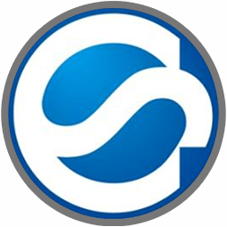
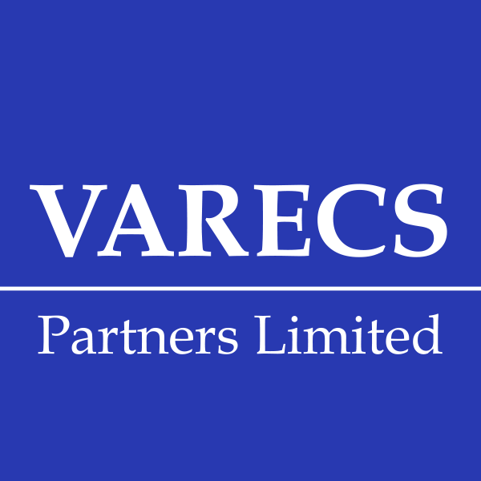
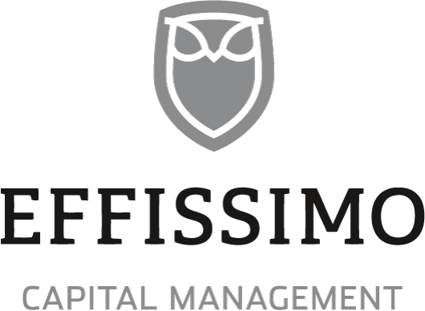
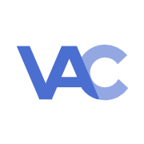
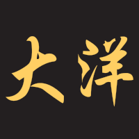
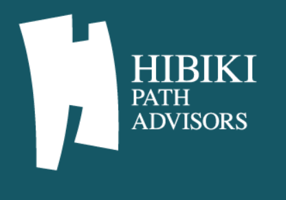
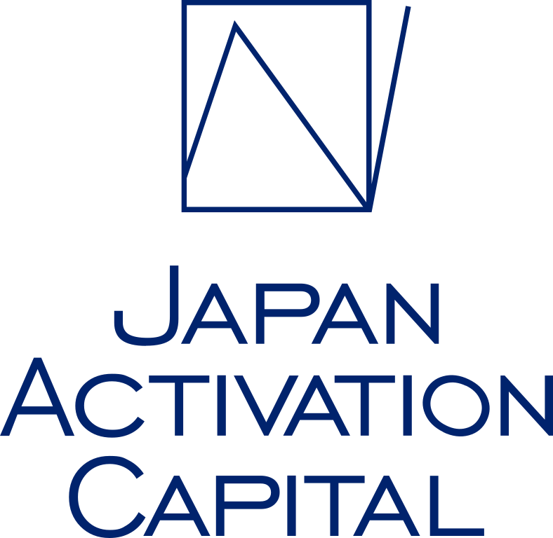
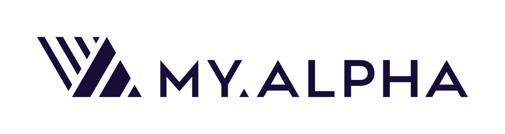
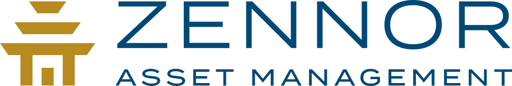

ACTIVIST FUND DATABASE — 業界研究
日本株アクティビストファンド一覧
日本株に関与するアクティビストおよびエンゲージメント投資家を、公開書簡、株主提案、大量保有報告書、企業IRなど、公開情報で確認できた範囲で整理しています。掲載件数は「ファンド×対象企業」単位で、保有比率は各開示時点の値です。保有だけを理由に一般の機関投資家をアクティビストとは分類しません。事実と時系列の整理に徹し、因果関係の断定や推測による補完は行いません。
指標の定義：「ファンド×企業案件」はファンドと対象企業の組み合わせ数です。同じ企業に複数のファンドが関与している場合は複数件として数えるため、「ユニーク対象企業」（109社）とは一致しません。 「株主提案」は一次情報で確認できた議案数、「公式発表」はファンド公式アーカイブと照合済みの発表数です。いずれもデータ原本から自動集計しており、ページに件数を直接書き込んではいません。 「最終更新」は掲載内容が実際に変わった日付、「全体最終確認日」は登録済み全ファンドの巡回・確認が最後に揃って正常完了した日付です。混同しないよう分けて表示しています。
関与区分の定義
1つの案件に複数の区分が付くことがあります。いずれも一次情報で確認できたもののみ付与します。
大量保有報告書等の保有開示のみが確認できる状態。
対象会社との合意にもとづく提携・実行支援。対立型の関与とは区別している。
書簡・面談などの対話の実施が一次情報で確認できる状態。
専用サイト・プレスリリース等による公開の働きかけ。
会社法に基づく株主提案の提出が確認できる状態。
会社提案への反対推奨を公表するキャンペーン。
分析資料（ホワイトペーパー）の公表。
経営陣・取締役会宛の公開書簡の公表。
取締役・監査役候補者の提案。
訴訟・差止め等の法的手続。
TOB・MBOに関連する関与。
| ロゴ | ファンド | 拠点・投資スタイル | 確認済み 関与先 | 主な関与先・論点 | 最終更新 |
|---|---|---|---|---|---|
| オアシス・ Oasis Management Company Ltd. 香港を拠点とする運用会社。日本の上場企業に対して、保有開示、公開キャンペーン、株主提案、取締役候補者の提案などの手法で関与した事例が公開情報で確認できる。専用キャンペーンサイトを開設して資料を公表する手法を用いることがある。 |
香港 アクティビストエンゲージメントバリュー |
56 社大量保有 206件 | 小林製薬、花王、京セラ、KADOKAWA ガバナンス・品質保証体制・役員選任・定款変更／化粧品事業の成長戦略・資本効率・役員選任・報酬制度 |
2026年9月24日 | |
| 3Dインベストメント・ 3D Investment Partners Pte Ltd シンガポールを拠点とする日本株特化のバリュー投資型アクティビストファンド。旗艦ファンドとして3D Endeavor Fund・3D Opportunity Fundを運用し、東芝や富士ソフト等での関与で知られる。 |
シンガポール アクティビストバリューガバナンス改革 |
13 社大量保有 87件 | サッポロホールディングス、日鉄ソリューションズ、東邦ホールディングス、ＡＰＡＭＡＮ 不動産事業の分離・資産効率化・取締役会構成の刷新／親子上場（日本製鉄グループ）・資金運用の資本効率 |
2026年9月24日 | |
| アセット・ Asset Value Investors Limited ロンドン拠点の独立系資産運用会社。傘下最古のファンドAVI Global Trustは1889年設立。日本株では2018年設定のAVI Japan Opportunity Trust（AJOT、2025年11月にFidelity Japan Trustと統合）が中小型株を中心にアクティビズムを展開している。 |
英国ロンドン アクティビストバリュークローズドエンド型投資 |
2 社大量保有 1件 | ワコム、ロート製薬 代表取締役社長・COOの解任要求・取締役会構成の刷新／創業家取締役の解任要求・ガバナンス改革 |
2026年9月24日 | |
| ダルトン・ Dalton Investments LLC 1998年設立の米国の独立系資産運用会社。日本株では割安なバリュー株への投資と、資本効率・ガバナンス改善を求めるエンゲージメントを組み合わせた運用スタイルを特徴とする。Rising Sun Management（Nippon Active Value Fund／NAVF Selectの運用会社）と密接な関係を持ち、単独名義・共同名義の両方で活動する。 |
米国ロサンゼルス アクティビストバリューエンゲージメント |
3 社大量保有 1件 | フジ・ 自己株式取得・不動産事業スピンオフ・取締役会構成の刷新／買収防衛策（対抗措置）の条件付発動への反対・取締役候補者提案 |
2026年9月24日 | |
| ニッポン・ Nippon Active Value Fund plc ロンドン証券取引所上場（LON:NAVF）のクローズドエンド型投資会社。投資助言会社はRising Sun Management（代表David Mitchinson氏）。Dalton Investmentsと密接な関係を持ち、単独または共同で日本企業への株主提案・大量保有を行う。NAVF SelectはNAVFと別の関連ファンド。 |
英国ロンドン アクティビストバリュークローズドエンド型投資 |
21 社大量保有 202件 | 荏原実業、栄研化学、富士急行、文化シヤッター 役員報酬制度改定・自己株式取得・社外取締役の員数／取締役候補者提案（共同保有者による） |
2026年9月24日 | |
| エリオット・ Elliott Investment Management L.P. 1977年にPaul Singer氏が設立した米国拠点の投資会社。ディストレスト債からアクティビズムまで幅広い手法を用いる。日本株では2020年のソフトバンクグループ、2021年の東芝への関与を皮切りに、2023年以降は大日本印刷・住友不動産・トヨタ自動織機・商船三井など複数企業への関与を公表している。 |
米国ニューヨーク アクティビストイベントドリブンディストレスト |
4 社大量保有 1件 | トヨタ自動織機、住友不動産、大日本印刷 TOB価格の妥当性・非公開化・本源的価値算定／配当性向・政策保有株解消・ROE目標設定・ガバナンス改善 |
2026年9月24日 | |
| 旧村上ファンド系 Murakami-affiliated investment vehicles 「旧村上ファンド系」は単一の法人ではなく、村上世彰氏に関連するとされる複数の投資主体（シティインデックスイレブンス、野村絢氏、レノ、南青山不動産、エスグラントコーポレーション等）の総称として報道等で用いられる呼称です。本サイトでは、案件ごとに実際にEDINETへ大量保有報告書を提出している法的主体（legal_entities）を個別に記録し、単一法人として扱いません。「旧村上ファンド系」という呼称自体はEDINET提出書類上には登場しない、報道側のラベルです。 |
東京 アクティビスト |
6 社大量保有 7件 | コスモエネルギーHD、フジ・ 買収防衛策（新株予約権無償割当）の導入をめぐる攻防／自社株買い応募後の議決権行使をめぐる法的紛争・和解 |
2026年9月24日 | |
| パリサー・ Palliser Capital Elliott Investment Managementの香港拠点責任者を務めたJames Smith氏が2021年に設立したロンドン拠点のグローバル・マルチストラテジー・ヘッジファンド。運用チームの多くが元Elliott出身者で構成される。 |
英国ロンドン アクティビストバリューグローバル・マルチストラテジー |
7 社 | 京成電鉄、太平洋セメント、味の素、日本郵政 オリエンタルランド株保有の削減・資本配分・取締役会構成／CalPortland事業の売却・IPO検討・遊休資産の現金化 |
2026年9月24日 | |
 |
ストラテジックキャピタル Strategic Capital, Inc. 2012年設立の日本の投資助言会社。信託受託者（INTERTRUST TRUSTEES (CAYMAN) LIMITED、JAPAN-UPファンド名義）を通じて日本株に投資し、大量保有報告書・株主提案の多くはこの信託受託者とストラテジックキャピタル本体が共同で行う構造が公式資料上確認できる。 |
東京都渋谷区 アクティビストバリューガバナンス改革 |
23 社大量保有 218件 | ガンホー、ダイドーリミテッド、大阪製鐵、京阪神ビルディング 経営責任追及・社長解任要求・臨時株主総会招集請求／取締役会構成の刷新・総会運営の公正性 |
2026年9月24日 |
| カタリスト投資顧問／ Japan Catalyst, Inc. / Monex Activist Fund カタリスト投資顧問は投資助言・代理業者であり、運用会社ではありません。実際に株式を保有し株主提案を行うのは「マネックス・アクティビスト・マザーファンド」で、その運用会社はマネックス・アセットマネジメントです。カタリスト投資顧問は同マザーファンドに対する投資助言（sub-adviser）を担います。本ページでは、この3者を別主体として区別したうえで、公表された関与を整理しています。 |
東京 建設的エンゲージメント公募投信型 |
5 社 | しまむら、大日本印刷 配当性向の引き上げ・自己株式取得／社外取締役の選任・事業ポートフォリオの見直し |
2026年9月24日 | |
| LIMアドバイザーズ LIM Advisors Limited 1995年設立の香港拠点の運用会社。2002年に日本のマルチストラテジー・ファンドを設定し、2019年にイベント／アクティビスト戦略へ再構成しました。EDINETの大量保有報告書は「LIM Advisors Limited」名義、株主提案の提案株主は「LIM Japan Event Master Fund」名義で、両者は別の主体として記録しています。ファンド側の公表資料は限定的で、関与の一次情報は主に対象会社の適時開示で確認できます。 |
香港（東京にリサーチ拠点） イベントドリブンアクティビスト |
9 社大量保有 27件 | 八十二銀行、空港施設、タキヒヨー、北川精機 ガバナンス・資本政策／支配的株主からの独立性・ガバナンス |
2026年9月24日 | |
| グローバルESGストラテジー Global ESG Strategy / Swiss-Asia Financial Services 「Global ESG Strategy」は独立した規制法人ではなく、シンガポールのSwiss-Asia Financial Services Pte. Ltd.が運用する戦略・ファンドの名称です。EDINETの大量保有報告書は運用会社名義で提出され、対象会社の株主名簿上は「GLOBAL ESG STRATEGY DIRECTOR門田泰人」等の名義で記載されます。本ページではこの3層を区別して記録しています。名称にESGを含みますが、公表されている提案内容はガバナンスと資本効率を中心としたものです。 |
シンガポール アクティビストガバナンス改革 |
3 社 | 東京コスモス電機、ウィザス、日本ビジネスシステムズ 取締役会構成の刷新・増配要求／ガバナンス改革・資本効率・株主還元 |
2026年9月24日 | |
 |
ヴァレックス・ Varecs Partners Limited 2006年設立の日本の運用会社で、海外機関投資家の資金を中心にバリュー投資を行います。公表キャンペーンやプレスリリースを行わない「サイレント型」で、大量保有報告書上は高い保有比率を持つ銘柄が複数ありますが、株主提案は例外的です。本データベースでは、公開情報で具体的な関与が確認できた案件のみを掲載し、単なる保有は掲載対象としていません。 |
東京都中央区 バリューエンゲージメント |
11 社大量保有 63件 | BEENOS、テクノメディカ、帝国電機製作所、シーアールイー 取締役候補者の提案・TOBを受けた提案取下げ／株主提案（内容は要確認） |
2026年9月24日 |
 |
エフィッシモ・ Effissimo Capital Management Pte Ltd シンガポール拠点の運用会社。大量保有報告書は運用会社名義で提出される一方、公開買付けは案件ごとに組成されるSPV（例：ECMマスターファンドSPV3）が実施するため、両者を別主体として記録しています。公式サイトにはキャンペーン資料のアーカイブがなく、関与の確認は主にEDINETと対象会社の適時開示によります。 |
シンガポール アクティビスト支配権取得 |
4 社大量保有 3件 | ソフト99、川崎汽船、関東電化工業、UACJ 創業家MBOへの対抗TOB・支配権取得／自己株式取得（ToSTNeT-3）への応募・保有比率の調整 |
2026年9月24日 |
 |
バリューアクト・ ValueAct Capital Management, L.P. 米国拠点の運用会社。取締役の派遣を伴う建設的エンゲージメントを基本としますが、2023年のセブン＆アイ・ホールディングスでは委任状争奪戦を伴う公開キャンペーンを展開しました。大量保有報告書の提出名義は案件により運用会社名義とファンド車両名義（ValueAct Japan Master Fund）が使い分けられており、本データベースでは両者を区別しています。 |
米国サンフランシスコ アクティビスト取締役派遣型エンゲージメント |
1 社 | セブン＆アイHD 取締役会構成の刷新・コングロマリット構造の解消 |
2026年9月24日 |
| シルチェスター・ Silchester International Investors LLP 1994年設立の英国の運用会社。単一の運用プログラム「International Value Equity」を通じて日本株に長期投資します。基本は非公開の対話ですが、対話で成果が得られない場合に特別配当や自己株式取得に限定した株主提案を行う点が特徴です。公式サイトでスチュワードシップ方針と議決権行使結果を公開しており、日本企業に対する反対票の比率が高いことを自ら開示しています。 |
英国ロンドン バリューエンゲージメント |
12 社大量保有 11件 | メディパルHD、大林組、京都フィナンシャルグループ、住友大阪セメント 特別配当・自己株式取得・資本配分／特別配当（剰余金の配当） |
2026年9月24日 | |
| いちごアセットマネジメント Ichigo Asset Management International Pte. Limited 運用会社・投資助言会社・ファンド車両の4法人からなるグループです。上場企業である「いちご（2337）」とは全く別の主体であり、混同しないよう注意が必要です（同社はIchigo Trust Pte. Limitedが筆頭株主という資本関係にあります）。関与の性格は公開キャンペーン型ではなく、支配的持分を保有して経営を支えるアクティブオーナー型です。 |
シンガポール アクティブオーナーバリュー |
2 社大量保有 2件 | ジャパンディスプレイ、Sansan 支配株主としての資金供給・事業再生支援／大量保有の開示 |
2026年9月24日 | |
 |
タイヨウ・ Taiyo Pacific Partners L.P. 米国拠点のSEC登録投資顧問。「友好的なエンゲージメント投資」を掲げ、対立的な公開キャンペーンではなく資本業務提携や取締役の指名を通じた関与を行います。日本版スチュワードシップ・コードを受け入れ、議決権行使結果と年次自己評価を公式サイトで開示しています。任天堂創業家のYamauchi No.10 Family Officeと資本関係があると報じられていますが、法人・運用主体は別であり、本データベースでは別主体として扱います。 |
米国ワシントン州カークランド 建設的エンゲージメントアクティブオーナー |
2 社 | スター精密、ラクーンホールディングス 資本業務提携・取締役指名・投資委員会設置・非公開化／ファンド公式サイトで公表された関与 |
2026年9月24日 |
| ファラロン・ Farallon Capital Management, L.L.C. 米国拠点の運用会社。日本では公開キャンペーンサイトを持たず、関与は主に対象会社の法定開示（臨時報告書）で確認できます。大量保有報告書は運用会社名義で提出され、個別のファンド車両は公開買付関連書類で株数が別記されます。合意書の締結と社外取締役の推薦を通じた関与が特徴です。 |
米国サンフランシスコ イベントドリブン建設的エンゲージメント |
1 社 | ニッコンHD 合意書（スタンドスティル）・社外取締役の推薦・不動産方針の見直し |
2026年9月24日 | |
 |
ひびき・ Hibiki Path Advisors Pte. Ltd. 2015年設立のシンガポール拠点の運用会社。書簡・株主提案・解説動画・新聞広告・議決権行使助言会社への働きかけを組み合わせた、公開型の関与を継続的に行っています。日本語の専用ニュースサイトで発信を蓄積している点が特徴です。2025年11月に3D Investment Partnersへの事業統合が公表され、2026年1月に発効しました。以後の運用主体は3D内の独立チームであるため、本データベースでは2026年以降の関与主体の変更を注記しています。 |
シンガポール アクティビスト中小型株 |
12 社大量保有 31件 | 日本高純度化学、巴コーポレーション、アルファポリス、藤倉コンポジット 資本政策の見直し・ガバナンス改善・中期計画の刷新／中期計画の刷新・買収防衛策への反対・株主還元 |
2026年9月24日 |
| みさき投資 Misaki Capital Inc. 日本の独立系運用会社。「働く株主®」を掲げ、長期保有と非公開の対話を基本とします。近年は議決権行使の考え方を事前に公表したり、取締役会宛の書簡を公開したりする手法も併用しています。株主提案や委任状勧誘の事例は本データベースの調査範囲では確認できておらず、株主提案型のアクティビストとは区別して掲載しています。 |
東京都千代田区 エンゲージメント長期投資 |
5 社大量保有 16件 | 太陽ホールディングス、サカイ引越センター、日本電子、ミルボン 議決権行使の考え方の事前公表／創業家出身取締役の再任への反対理由の説明 |
2026年9月24日 | |
| Yamauchi-No.10 Family Office Yamauchi-No.10 Family Office 任天堂創業家の資産を運用するファミリーオフィスで、2020年設立。ヘッジファンドではありません。東洋建設に対する大規模な持分取得と非公開化提案、および株主提案による取締役会の入替えは、日本では稀な支配権争奪型の事例です。米国のTaiyo Pacific Partnersと資本関係があると報じられていますが、法人・運用主体は別であり、本データベースでは別主体として扱います。 |
東京 ファミリーオフィス支配権介入 |
1 社 | 東洋建設 非公開化提案・取締役会の入替え |
2026年9月24日 | |
| シンフォニー・ Symphony Financial Partners (Singapore) Pte. Ltd. シンガポール拠点の運用会社。自らを「建設的エンゲージメント」と位置づけ、公開キャンペーンや株主提案は行いません。公式サイトにニュースやキャンペーンのページは存在せず、関与の確認は大量保有報告書と対象会社・取引相手の適時開示によります。大規模な持分を事業会社へ相対で譲渡する形の出口が確認できます。 |
シンガポール 建設的エンゲージメントバリュー |
4 社大量保有 3件 | 要興業、デンヨー、日本証券金融、インフォマート 大規模持分の事業会社への譲渡・業務提携／大量保有の開示 |
2026年9月24日 | |
 |
ジャパン・ Japan Activation Capital Inc. 2023年7月設立の日本の運用会社。日本の大手・中堅上場企業に対し、リミテッドパートナーシップ契約および投資事業有限責任組合契約にもとづく運用として株式を保有し、対象会社の経営陣との対話を通じて経営戦略の推進や組織強化の実行支援を行う旨を大量保有報告書に記載している。確認できた大量保有報告書では、重要提案行為等の欄は「該当なし」と記載されている。 |
東京 協働・実行支援型エンゲージメント大手・中堅企業主要株主型 |
2 社大量保有 2件 | タダノ、日本光電工業 経営戦略推進・組織強化の実行支援／大量保有の開示 |
2026年9月24日 |
| サファイアテラ・ Sapphireterra Capital, LLC 米国イリノイ州シカゴを本店とする運用会社。日本の上場企業に対するエンゲージメント投資を掲げ、公式サイトでプレスリリースおよび過去のエンゲージメント事例を公表している。EDINETでは2025年7月に三陽商会（8011）宛の大量保有報告書を提出している。 |
シカゴ（米国イリノイ州） 公開アクティビスト株主提案型エンゲージメント |
3 社大量保有 2件 | 三陽商会、ゴールドクレスト、伊藤忠商事 株主還元・戦略的方向性／ファンド公式サイトで公表された関与 |
2026年9月24日 | |
 |
エムワイ・ MY.Alpha Management HK Advisors Limited 香港を拠点とする投資運用会社（香港株式有限責任会社、2007年4月設立）。日本の上場企業に対する大量保有報告書では、保有目的を「純投資及び状況に応じて経営陣への助言、重要提案行為を行うこと」と記載している。重要提案行為等の欄には「行う可能性がある」旨の記載があり、実際に重要提案行為を行ったことを示すものではない。 |
香港 イベントドリブンエンゲージメントアジア株 |
1 社大量保有 1件 | ファンケル 経営陣への助言 |
2026年9月24日 |
 |
ゼナー・ Zennor Asset Management LLP 英国の運用会社。日本株に特化したファンドを運用し、複数の日本の中小型上場企業について大量保有報告書を提出している。保有目的欄には、投資一任契約等にもとづく運用を主目的としつつ、状況に応じて経営陣との意見交換や重要提案行為等を行う可能性がある旨が記載されている。 |
ロンドン（英国） 建設的エンゲージメントアクティブオーナー日本株バリュー |
7 社大量保有 11件 | エリアリンク、栗本鐵工所、堺化学工業、やまみ 保有開示の推移／保有開示 |
2026年9月24日 |
| グランサム・ Grantham, Mayo, Van Otterloo & Co. LLC 米国の資産運用会社。日本株については Usonian Japan Equity と呼ばれる運用戦略を持つが、EDINET上の正式な提出者は「グランサム、マヨ、ヴァン オッテルロー アンド カンパニー エルエルシー」であり、戦略名は法的な提出者ではない。日本のGMOインターネットグループとは別法人であり、資本関係も無い。複数の日本の上場企業について大量保有報告書を提出している。 |
ボストン（米国マサチューセッツ州） 建設的エンゲージメント日本株バリュー長期運用 |
6 社大量保有 6件 | マクセル、美津濃、BEENOS、H.U.グループHD 保有開示／大量保有の開示 |
2026年9月24日 |
対象企業から探す（企業別逆引き）
対象企業ごとに、関与が確認できたファンドを一覧しています。ユニーク対象企業 109社のうち、 7社には複数のファンドが関与しています（そのため「ファンド×企業案件」の件数は企業数より多くなります）。
-
太陽ホールディングス 4626・東証プライム 3ファンドが関与
-
BEENOS 3328・東証プライム（上場廃止） 2ファンドが関与
-
フジ・
メディア・ 4676・東証プライム 2ファンドが関与ホールディングス -
東京コスモス電機 6772・東証スタンダード 2ファンドが関与
-
大日本印刷 7912・東証プライム 2ファンドが関与
-
ゴールドクレスト 8871・東証スタンダード 2ファンドが関与
-
TBSホールディングス 9401・東証プライム 2ファンドが関与
-
ミライト・
ワン 1417・東証プライム -
コムシスホールディングス 1721・東証プライム
-
大林組 1802・東証プライム
-
熊谷組 1861・東証プライム
-
東亜道路工業 1882・東証プライム
-
東洋建設 1890・東証プライム
-
世紀東急工業 1898・東証プライム
-
巴コーポレーション 1921・東証スタンダード
-
住友電設 1949・東証プライム
-
エクシオグループ 1951・東証プライム
-
エス・
エム・ 2175・東証プライムエス -
ヤクルト本社 2267・東証プライム
-
日鉄ソリューションズ 2327・東証プライム
-
サッポロホールディングス 2501・東証プライム
-
味の素 2802・東証プライム
-
やまみ 2820・東証スタンダード
-
ラクーンホールディングス 3031・東証プライム
-
ダイドーリミテッド 3205・東証スタンダード
-
セブン＆アイ・
ホールディングス 3382・東証プライム -
ツルハホールディングス 3391・東証プライム
-
クスリのアオキホールディングス 3549・東証スタンダード
-
ガンホー・
オンライン・ 3765・東証プライムエンターテイメント -
北越コーポレーション 3865・東証プライム
-
堺化学工業 4078・東証プライム
-
花王 4452・東証プライム
-
ソフト９９コーポレーション 4464・東証スタンダード
-
ロート製薬 4527・東証プライム
-
H.U.グループホールディングス 4544・東証プライム
-
栄研化学 4549・東証プライム
-
DIC 4631・東証プライム
-
デジタルガレージ 4819・東証プライム
-
あすか製薬ホールディングス 4886・東証プライム
-
ファンケル 4921・東証プライム
-
小林製薬 4967・東証プライム
-
日本高純度化学 4973・東証プライム
-
コスモエネルギーホールディングス 5021・東証プライム
-
日本ビジネスシステムズ 5036・東証プライム
-
ＴＯＹＯ ＴＩＲＥ 5105・東証プライム
-
藤倉コンポジット 5121・東証プライム
-
太平洋セメント 5233・東証プライム
-
ノリタケ 5331・東証プライム
-
ＴＯＴＯ 5332・東証プライム
-
日本製鉄 5401・東証プライム
-
東京製鐵 5423・東証プライム
-
大阪製鐵 5449・東証スタンダード
-
ヨドコウ 5451・東証プライム
-
栗本鐵工所 5602・東証プライム
-
京都フィナンシャルグループ 5844・東証プライム
-
文化シヤッター 5930・東証プライム
-
日本郵政 6178・東証プライム
-
豊田自動織機 6201・東証プライム
-
ＳＭＣ 6273・東証プライム
-
荏原実業 6328・東証プライム
-
ダイキン工業 6367・東証プライム
-
タダノ 6395・東証プライム
-
山洋電気 6516・東証プライム
-
要興業 6566・東証スタンダード
-
ニデック 6594・東証プライム
-
テクノメディカ 6678・東証スタンダード
-
ワコム 6727・東証プライム
-
ジャパンディスプレイ 6740・東証プライム
-
マクセル 6810・東証プライム
-
堀場製作所 6856・東証プライム
-
京セラ 6971・東証プライム
-
日産自動車 7201・東証プライム
-
日産車体 7222・東証スタンダード
-
極東開発工業 7226・東証プライム
-
タチエス 7239・東証プライム
-
ハイレックスコーポレーション 7279・東証スタンダード
-
メディパルホールディングス 7459・東証プライム
-
ヤギ 7460・東証スタンダード
-
スター精密 7718・東証プライム（上場廃止）
-
Ａ＆Ｄホロンホールディングス 7745・東証プライム
-
河合楽器製作所 7952・東証プライム
-
伊藤忠商事 8001・東証プライム
-
三陽商会 8011・東証プライム
-
美津濃 8022・東証プライム
-
ワキタ 8125・東証プライム
-
東邦ホールディングス 8129・東証プライム
-
しまむら 8227・東証プライム
-
八十二銀行 8359・東証プライム
-
みずほフィナンシャルグループ 8411・東証プライム
-
日本証券金融 8511・東証プライム
-
オリエントコーポレーション 8585・東証プライム
-
京阪神ビルディング 8818・東証プライム
-
住友不動産 8830・東証プライム
-
空港施設 8864・東証スタンダード
-
レーサム 8890・旧東証プライム（上場廃止）
-
エリアリンク 8914・東証スタンダード
-
京成電鉄 9009・東証プライム
-
富士急行 9010・東証プライム
-
サカイ引越センター 9039・東証プライム
-
ニッコンホールディングス 9072・東証プライム
-
川崎汽船 9107・東証プライム
-
玉井商船 9127・東証スタンダード
-
アルファポリス 9467・東証グロース
-
KADOKAWA 9468・東証プライム
-
アインホールディングス 9627・東証プライム
-
ウィザス 9696・東証スタンダード
-
ヤマダホールディングス 9831・東証プライム
-
イエローハット 9882・東証プライム
-
タキヒヨー 9982・東証スタンダード
該当する対象企業が見つかりませんでした。
最近の動き（全ファンド横断）
日付が特定できているイベントを新しい順に表示しています。時系列の整理であり、因果関係を示すものではありません。
アクティビストの動きを知る、から、投資実務を学ぶへ。
大量保有報告書の読み方、バリュエーション、資本政策の分析は、日本語で手を動かして学べる実務Excel教材で体系的に習得できます。